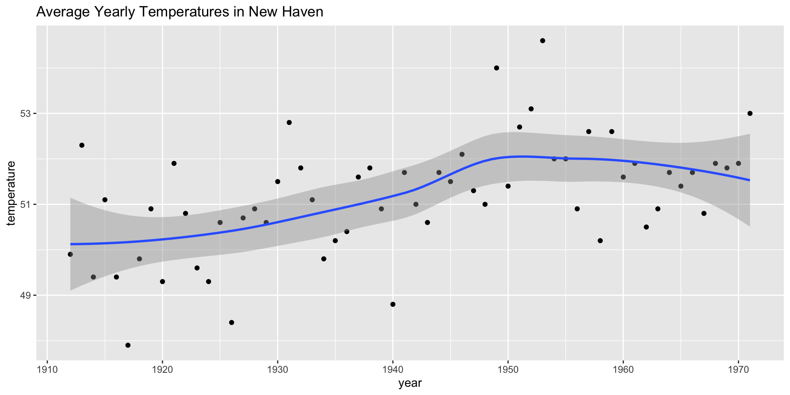
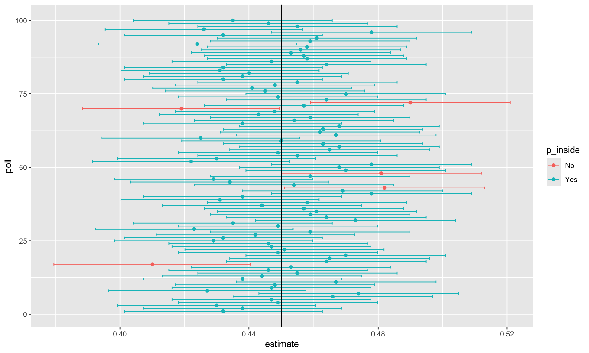

2026-10-21
Confidence intervals are a very useful concept widely employed by data analysts.
A version of these that are commonly seen come from the ggplot geometry geom_smooth.
Below is an example using a temperature dataset available in R:

In our competition, you were asked to give an interval.
If the interval you submitted includes the \(p\), you receive half the money you spent on your “poll” back and proceed to the next stage of the competition.
One way to pass to the second round is to report a very large interval.
For example, the interval \([0,1]\) is guaranteed to include \(p\).
However, with an interval this big, we have no chance of winning the competition.
Similarly, if you are an election forecaster and predict the spread will be between -100% and 100%, you will be ridiculed for stating the obvious.
Even a smaller interval, such as saying the spread will be between -10 and 10%, will not be considered serious.
On the other hand, the smaller the interval we report, the smaller our chances are of winning the prize.
Likewise, a bold pollster that reports very small intervals and misses the mark most of the time will not be considered a good pollster.
We might want to be somewhere in between.
We can use the statistical theory we have learned to compute the probability of any given interval including \(p\).
To illustrate this we run the Monte Carlo simulation.
We use the same parameters as above:
[1] 0.4062567 0.4677433[1] 0.4161843 0.4778157\[ \mbox{Pr}\left(\bar{X} - 1.96\hat{\mbox{SE}}(\bar{X}) \leq p \leq \bar{X} + 1.96\hat{\mbox{SE}}(\bar{X})\right) \]
\[ \mbox{Pr}\left(-1.96 \leq \frac{\bar{X}- p}{\hat{\mbox{SE}}(\bar{X})} \leq 1.96\right) \]
\[ \mbox{Pr}\left(-1.96 \leq Z \leq 1.96\right) \]
z satisfies the following:\[ \mbox{Pr}\left(-z \leq Z \leq z\right) = 0.99 \]
In statistics textbooks, confidence interval formulas are given for arbitraty probabilities written as \(1-\alpha\).
We can obtain the \(z\) for the equation above using z = qnorm(1 - alpha / 2) because \(1 - \alpha/2 - \alpha/2 = 1 - \alpha\).
So, for example, for \(\alpha=0.05\), \(1 - \alpha/2 = 0.975\) and we get the \(z=1.96\) we used above:
